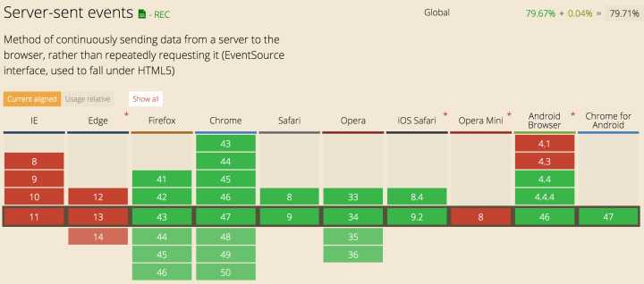

SSE 要求服务器与浏览器保持连接。 对于不同的服务器软件来说，所消耗的资源是不一样的。 Apache 服务器，每个连接就是一个线程，如果要维持大量连接，势必要消耗大量资源。 Node 则是所有连接都使用同一个线程，因此消耗的资源会小得多，但是这要求每个连接不能包含很耗时的操作， 比如磁盘的 IO 读写
建立连接 主动断开
EventSource实例的readyState属性，表明连接的当前状态。该属性只读，可以取以下值。
0：相当于常量EventSource.CONNECTING，表示连接还未建立，或者断线正在重连。
1：相当于常量EventSource.OPEN，表示连接已经建立，可以接受数据。
2：相当于常量EventSource.CLOSED，表示连接已断，且不会重连。
